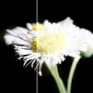

Malambot na Glow

Nagsa-screen ng malambot at blurred na kopya ng larawan para sa dreamy glow, kadalasan mula sa highlights.
Nagpapatong ang Malambot na Glow ng malabong kopya ng larawan sa ibabaw nito para sa parang panaginip at malamlam na dating, karamihan mula sa mga highlight. Ang Laki ay kung gaano kalambot ang ulap, ang Mga highlight ay kung gaano karami nito ang galing sa maliliwanag na bahagi, at kinukulayan ito ng Kulay. Hinahalo ito ng Opacity sa orihinal.
Mga Setting
| Setting | Uri | Saklaw | Default |
|---|---|---|---|
| Laki | Numero | 0 hanggang 300 | 20 |
| Liwanag | Numero | 0 hanggang 3 | 1 |
| Kontrast | Numero | -1 hanggang 1 | 0.2 |
| Mga highlight | Numero | 0 hanggang 1 | 0.5 |
| Kulay | Kulay | – | #FF5566 |
| Blend | Numero | 0% hanggang 100% | 25% |
| Opacity | Numero | 0 hanggang 1 | 1 |
| Glow sa labas | Numero | 0 hanggang 1 | 1 |
| Falloff | Pagpipilian | Pantay, Layer | Pantay |
| Estilo | Pagpipilian | Klasiko, Karaniwan | Klasiko |